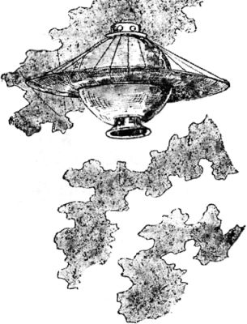
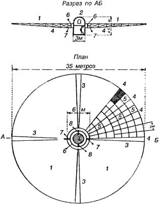

Лучевые межпланетные корабли
Космические корабли, которые сегодня называют фотонными, тоже имели свои прототипы, придуманные на исходе XIX века.
Первый такой проект предложили неутомимые Жан Ле Фор и Анри Граффиньи в уже известном нам сочинении «Необыкновенные приключения русского ученого». Описывая цивилизацию селенитов, намного обогнавшую землян в техническом развитии, французские романисты рассказывают о летательном аппарате, с помощью которого жители Луны сумели достигнуть Венеры. Двигательной силой для. этого аппарата служило отталкивающее действие солнечного света.
Экспедиция на Венеру, согласно Фору и Граффиньи, выглядела следующим образом.
На вершине лунной горы был установлен параболический рефлектор высотой 50 метров и шириной 250 метров, изготовленный из вещества, отражающего свет, — «селена». Сам аппарат представлял собой полый шар диаметром 10 метров, сделанный из того же материала.

Так как подъемной силы корабля было недостаточно для перевозки с Луны на Венеру пятерых путешественников, то было решено прямо в пути отделиться от основного аппарата на особом модуле. Этот модуль состоял из гондолы, прикрепленной металлическими канатами к плоскому экваториальному селеновому кругу диаметром 30 метров. Этот круг должен был играть роль парашюта при спуске в атмосфере Венеры.
В момент отлета аппарат поместили в фокус рефлектора, окруженный селеновыми поворотными зеркалами. Когда последние были повернуты надлежащим образом, аппарат под воздействием отталкивающей силы лучей унесся по направлению к Венере со скоростью 28 тысяч км/с
Другой проект «лучевого» межпланетного корабля для полета на Венеру предложил Борис Красногорский в своем «астрономическом» романе «По волнам эфира», изданном в 1913 году.

Корабль под названием «Победитель пространства» был построен на Обуховском заводе Петрограда и представлял собой «вагон для пассажиров» с закрепленным на нем кольцевым зеркалом. По мнению автора, лучи Солнца должны производить давление на полированную поверхность зеркала с силой, достаточной для того, чтобы корабль достиг космических скоростей. Поворачивая зеркало относительно вагона и Солнца и сообразуясь с силами притяжения планет, можно уменьшать силу давления лучей и менять направление движения.
Зеркало имело диаметр 35 метров и состояло из тонких листов отполированного металла. Листы накладывались на прочную раму из сплава алюминия, свинца и ванадия (Красногорский называет этот сплав «максвеллием»). При этом вагон соединялся с зеркалом шарнирно. Для закрытия отражающей поверхности, когда необходимо уменьшить лучевое давление, служили шторы из черного шелка, натягиваемые при помощи системы шнуров.
Сам вагон имел форму цилиндра со сферической крышей. Высота его — 4,5 метра, диаметр — 3 метра. Стенки вагона сделаны двойными; для обеспечения теплоизоляции из пространства между стенками выкачан весь воздух. Вес вагона с четырьмя пассажирами, запасами кислорода, провианта и воды на 60 дней составлял 2160 килограммов.
Момент старта выбирается во время восхода или захода Солнца, когда лучи нашего светила косо падают на Землю. Аппарат устанавливается на платформу из четырех крестообразных балок, к концам которых прикрепляются тросы из четырех наполненных водородом шаров, которые поднимают платформу со стоящим на ней кораблем как можно выше над Землей, пока лучевое давление не снимет корабль с платформы и не унесет его в межпланетное пространство, — еще один вариант комбинированной аэрокосмической схемы, о которой мы говорили выше.
Согласно тексту романа, в качестве стартовой площадки было выбрано Марсово поле в Петрограде, время отбытия — 18.00, 28 июля. Точно в назначенное время канаты, удерживающие корабль у земли, были отрублены, и водородные аэростаты понесли его вверх. На высоте 8,5 километра солнечные лучи сняли корабль с площадки, и он устремился к Луне, мимо которой собирались пролететь межпланетные путешественники по пути на Венеру.
По расчетам автора, весь полет с Земли на Венеру, включая подъем и спуск в земной атмосфере, должен был занять всего лишь 42 дня. Однако почти сразу «Победитель пространства» оказался в метеоритном потоке «персеид». Путешественники пытались маневрировать, но один из крупных камней попал в аппарат, и корабль потерял свое зеркало. Увлекаемый метеоритным потоком «Победитель пространства» вошел в земную атмосферу и рухнул в Ладожское озеро, где его подобрал пароход.
В следующем романе под названием «Острова эфирного океана» Красногорский описывает новую экспедицию на «Победителе пространства». Она заканчивается более результативно, хотя путешественников и преследуют злобные конкуренты с Запада на построенном ими и вооруженном пушками межпланетном корабле «Patria».
Впоследствии идея «лучевых» кораблей легла в основу целого семейства проектов «солнечных парусников», о которых мы подробно поговорим в главе 19.